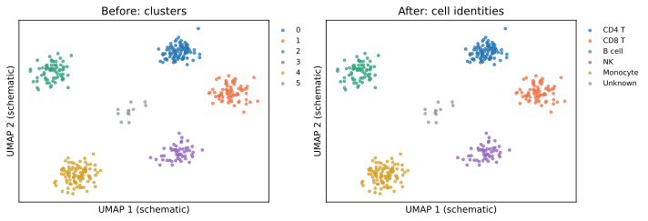
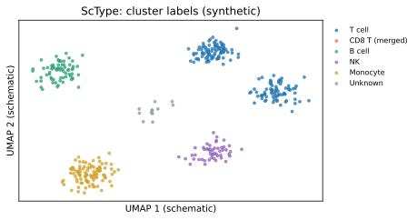
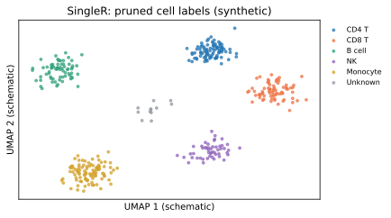
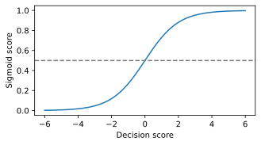
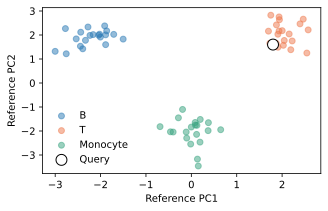
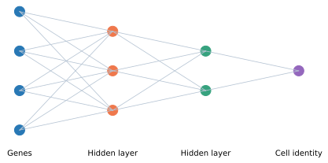
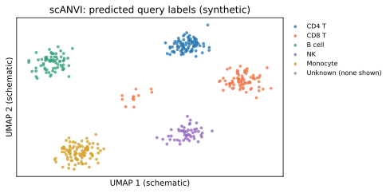

Cell type annotation in single-cell RNA sequencing
Illustrated principles, input and output formats, reproducible code examples and comparison of six automated cell type annotation methods.
Single-cell RNA-seq
Bioinformatics
Cell type annotation
Created
Thursday, November 26, 2026
Modified
Saturday, November 28, 2026
Note
All numeric example outputs and schematic plots in this tutorial are synthetic teaching examples, not benchmark results. The R and Python scripts are provided for execution in your own environment. They are not executed during rendering, so the document can be rendered without installing the analysis packages. The actual labels depend on the reference/model version.
1 Introduction
Cell type annotation assigns biological identities to observations in a single-cell expression matrix. Clustering finds transcriptionally similar cells; annotation identifies what those cells are. Cell identity (e.g. CD8 T cell) should be distinguished from cell state (e.g. activated, proliferating or exhausted).
flowchart TD A[QC-filtered gene expression] --> B[Marker knowledge: ScType] A --> C[Reference similarity: SingleR] A --> D[Linear classifier: CellTypist] A --> E[Reference mapping: classical Azimuth] A --> F[Neural classifier: Pan-human Azimuth] A --> G[Semi-supervised latent model: scANVI] B & C & D & E & F & G --> H[Cell labels and confidence diagnostics] H --> I[Biological validation]
flowchart TD
A[QC-filtered gene expression] --> B[Marker knowledge: ScType]
A --> C[Reference similarity: SingleR]
A --> D[Linear classifier: CellTypist]
A --> E[Reference mapping: classical Azimuth]
A --> F[Neural classifier: Pan-human Azimuth]
A --> G[Semi-supervised latent model: scANVI]
B & C & D & E & F & G --> H[Cell labels and confidence diagnostics]
H --> I[Biological validation]
1.1 Common teaching dataset
Use 10x PBMC 3K. The following small normalized expression matrix illustrates the signal used to distinguish T cells, B cells and monocytes. Real data contain thousands of genes and cells, and may be sparse.
QC thresholds are illustrative. For multi-library data, perform doublet detection per library, preserve sample IDs, and join split RNA layers when needed (JoinLayers). Clustering and UMAP are not prerequisites for most cell-level classifiers.

Before and after annotation — synthetic illustration.
Genes × cells, log-normalized RNA or scaled expression
expr
Marker database
Cell type, positive and negative marker sets
Immune system
Cluster assignments
One cluster per cell
pbmc$seurat_clusters
Cell type
Positive markers
Negative markers
T cell
CD3D, CD3E, TRAC
MS4A1, CD79A
B cell
MS4A1, CD79A, CD19
CD3D, CD3E
NK
NKG7, GNLY, KLRD1
CD3D, CD3E
Monocyte
LYZ, S100A8, LST1
CD3D, MS4A1
2.2 Principle and steps
flowchart LR A[Expression] --> B[Gene-wise Z-score] M[Positive and negative markers] --> C[Weighted marker scoring] B --> C --> D[Sum scores by cluster] --> E[Best label or Unknown]
flowchart LR
A[Expression] --> B[Gene-wise Z-score]
M[Positive and negative markers] --> C[Weighted marker scoring]
B --> C --> D[Sum scores by cluster] --> E[Best label or Unknown]
Standardize each gene across cells: \(Z_{gc}=(X_{gc}-\mu_g)/\sigma_g\). ScType gives greater weight to specific markers and subtracts negative marker evidence. A simplified score is
For CD3D=2.5, CD3E=2, MS4A1=-1, CD79A=-0.5, equal weights give T score 4.24 and B score -4.24. Scores are summed across cells in each cluster; low-scoring clusters may be designated Unknown. This is a simplified calculation, not the full implementation.
Native intermediate es is a cell types × cells score matrix; the standard workflow aggregates scores by cluster.
Cluster
N cells
T score
B score
Monocyte score
Label
0
50
125
-40
-22
T cell
1
45
-38
142
-18
B cell
2
55
-25
-12
156
Monocyte
3
20
2
3
1
Unknown
Final metadata (illustrative exported table):
cell_id
seurat_clusters
ScType
C1
0
T cell
C2
0
T cell
C3
1
B cell
C4
1
B cell
C5
2
Monocyte
C6
2
Monocyte
C7
3
Unknown

ScType annotated cells — synthetic illustration.
Best when reliable markers exist but a suitable reference is unavailable. The scores are not probabilities; mixed clusters may hide rare cells. Human and mouse marker sets are available; custom sets support other species.
Genes × labeled reference profiles, typically log-expression
MonacoImmuneData
Reference labels
One label per reference profile
ref$label.main
Gene
Query C1
T reference
B reference
CD3D
10
100
2
CD3E
8
80
1
MS4A1
2
20
10
CD79A
1
10
8
3.2 Principle and steps
flowchart LR A[Labeled reference] --> B[Select discriminative genes] Q[Query cell] --> C[Spearman correlations] B --> C --> D[Summarize per reference label] --> E[Fine-tune close labels] --> F[Prune weak calls]
flowchart LR
A[Labeled reference] --> B[Select discriminative genes]
Q[Query cell] --> C[Spearman correlations]
B --> C --> D[Summarize per reference label] --> E[Fine-tune close labels] --> F[Prune weak calls]
SingleR selects informative genes by comparing reference labels. It calculates rank correlations with reference profiles and typically summarizes correlations within a label using the 80th percentile. Fine-tuning repeats comparison using genes that distinguish competing labels; pruning flags ambiguous assignments.
Rank correlation example — synthetic illustration.
For example, initial CD4 and CD8 scores of 0.85 and 0.83 can become 0.58 and 0.91 after fine-tuning on discriminatory genes (synthetic scores). The final label can therefore differ from the highest initial score.
Native pred is a Bioconductor DataFrame; pred$scores is a cells × reference labels matrix. Example initial scores (simplified labels):
Cell
T
B
Monocyte
C1
0.91
0.21
0.13
C3
0.15
0.89
0.20
C5
0.19
0.25
0.92
cell_id
labels
delta.next
pruned.labels
C1
CD4 T cells
0.32
CD4 T cells
C2
CD8 T cells
0.24
CD8 T cells
C3
B cells
0.54
B cells
C4
B cells
0.49
B cells
C5
Monocytes
0.55
Monocytes
C6
Monocytes
0.51
Monocytes
C7
CD8 T cells
0.01
NA

SingleR annotated cells — synthetic illustration.
delta.next is the separation between best and next-best scores at the last fine-tuning step; pruning also considers a label-specific distribution of delta values. It is not a probability. Other references include HumanPrimaryCellAtlasData, BlueprintEncodeData, DatabaseImmuneCellExpressionData, MouseRNAseqData, ImmGenData and custom references.
Pre-trained classifier with gene features, scaler, coefficients and intercepts
Immune_All_Low.pkl
Optional over-clustering
One group per cell
Used for majority voting
4.2 Principle and steps
flowchart TD A[Labeled training cells] --> B[Train one-vs-rest logistic regression] B --> C[Store coefficients and scaling parameters] Q[Query log-normalized expression] --> D[Align genes and standardize] C --> E[Decision scores] D --> E --> F[Sigmoid scores and best label] --> G[Optional majority voting]
flowchart TD
A[Labeled training cells] --> B[Train one-vs-rest logistic regression]
B --> C[Store coefficients and scaling parameters]
Q[Query log-normalized expression] --> D[Align genes and standardize]
C --> E[Decision scores]
D --> E --> F[Sigmoid scores and best label] --> G[Optional majority voting]
CellTypist learns gene coefficients using logistic regression optimized by stochastic gradient descent. A synthetic coefficient matrix is:
Gene
T
B
Monocyte
CD3D
1.8
-0.6
-0.5
MS4A1
-0.8
2.0
-0.7
LYZ
-0.4
-0.3
1.8
Intercept
-0.5
-0.3
-0.4
For standardized expression \((2,-0.5,-1)\), calculate \(s_t=b_t+\sum_g w_{tg}x_g\) and \(p_t=1/(1+e^{-s_t})\). T cell score = 3.9, sigmoid = 0.980; B score = -2.2, sigmoid = 0.100; monocyte score = -2.85, sigmoid = 0.055. Independent sigmoid scores need not sum to one.

Sigmoid decision function — synthetic illustration.
Majority voting assigns the dominant predicted label within an over-cluster (subject to the configured minimum proportion). This can reduce noise but may erase genuine rare populations.
predictions.predicted_labels, decision_matrix, and probability_matrix are pandas DataFrames; the latter two have cells × model labels. to_adata() adds metadata to adata.obs. Illustrative labels are shortened for readability.
conf_score depends on the selected label and to_adata options; it is not a universally calibrated probability. Immune_All_High uses broader categories; Immune_All_Low uses finer categories. Tissue-specific and custom models are available.
Raw RNA counts, genes × cells (Seurat or supported file)
pbmc
Reference atlas
Annotated expression, reductions, neighbor structures and UMAP model
pbmcref
Reference labels
Hierarchical cell identities
celltype.l1, celltype.l2
5.2 Principle and steps
flowchart LR A[Query counts] --> B[Normalize and project] R[Reference atlas] --> B --> C[Find and score anchors] --> D[Weighted label transfer] --> E[Reference UMAP projection]
flowchart LR
A[Query counts] --> B[Normalize and project]
R[Reference atlas] --> B --> C[Find and score anchors] --> D[Weighted label transfer] --> E[Reference UMAP projection]
Reference PCA or supervised PCA defines the coordinate system. In a simplified example the gene loadings for PC1 are \((0.707,-0.707,0)\) and PC2 \((0,0,1)\). For standardized query \((2,-1,-0.5)\) the projected coordinates are \((2.121,-0.5)\). The method finds corresponding reference-query cell pairs (anchors), evaluates their quality and transfers labels using weighted anchor contributions.

Reference mapping — synthetic illustration.
\[P_t=\sum_i w_i I(l_i=t).\]
Anchor
Label
Weight
A1
CD8 T
0.35
A2
CD8 T
0.25
A3
CD8 T
0.20
A4
CD4 T
0.12
A5
NK
0.08
CD8 T receives 0.80 total support, CD4 T 0.12 and NK 0.08. The full algorithm is more complex than simple nearest-neighbor voting.
Useful for consistent reference coordinates and hierarchical labels across cohorts. High mapping scores are not proof of biological correctness for out-of-reference cells.
Human RNA expression; log-normalized for illustrated R workflow
Seurat object
Model
Pre-trained hierarchical neural network and gene features
Pan-human model
Taxonomy
Built-in human cell label hierarchy
Broad, medium, fine
6.2 Principle and steps
flowchart LR A[Human expression] --> B[Match model genes] --> C[Neural network] --> D[Hierarchical label predictions] --> E[Confidence and embedding]
flowchart LR
A[Human expression] --> B[Match model genes] --> C[Neural network] --> D[Hierarchical label predictions] --> E[Confidence and embedding]
Unlike classical Azimuth, Pan-human Azimuth performs neural network inference rather than anchor-based mapping. Hidden layers learn nonlinear transformations \(h=f(Wx+b)\); hierarchical classification organizes labels at different resolutions. For example, a cell may be identified broadly as a T cell and more finely as a CD8 effector T cell. The model supports multiple human tissues; the current model taxonomy and preprocessing are documented on the official site.

Conceptual neural network and hierarchy — synthetic illustration.
6.3 R script
# remotes::install_github('satijalab/AzimuthAPI')library(AzimuthAPI)pbmc <-NormalizeData(pbmc)# Cloud option: requires authorization to transfer expression data externally# pbmc_pan <- CloudAzimuth(pbmc)# Local option: install panhumanpy in a compatible Python environment firstlibrary(reticulate)use_condaenv('pan-human-azimuth',required=TRUE)pbmc_pan <-ANNotate(pbmc)head(pbmc_pan[[]])DimPlot(pbmc_pan,group.by='azimuth_medium',label=TRUE)DimPlot(pbmc_pan,group.by='azimuth_fine',label=TRUE)FeaturePlot(pbmc_pan,features='final_level_confidence')# Use returned embedding dimensions rather than hard-coding the sizepbmc_pan <-RunUMAP(pbmc_pan,reduction='azimuth_embed',dims=seq_len(ncol(Embeddings(pbmc_pan,'azimuth_embed'))),reduction.name='azimuth_umap')DimPlot(pbmc_pan,reduction='azimuth_umap',group.by='azimuth_fine',label=TRUE)write.csv(pbmc_pan[[]],'panhuman_labels.csv')
Consult the official installation instructions for supported Python versions and GPU options. For sensitive patient data, local execution is preferable if institutional policy prohibits external data transfer.
6.4 Output: what the annotated cells look like
The annotated object contains hierarchical metadata, final-level confidence and model embeddings. Example labels below are schematic and not exact taxonomy strings.
cell_id
azimuth_broad
azimuth_medium
azimuth_fine
final_level_confidence
C1
Immune
T cell
CD4 naive T
0.94
C2
Immune
T cell
CD8 effector T
0.92
C3
Immune
B cell
Naive B
0.97
C4
Immune
B cell
Memory B
0.91
C5
Immune
Myeloid
Classical monocyte
0.98
C6
Immune
Myeloid
Nonclassical monocyte
0.89
C7
Immune
T cell
CD8 T
0.43
The full hierarchy and final-level label can also be available as full_hierarchical_labels and final_level_labels. Embedding output is cells × learned latent features (documented model provides 128 dimensions); this is not a classical reference UMAP.
flowchart TD A[Reference counts and labels] --> C[Joint raw count matrix] B[Unlabeled query counts] --> C --> D[Train scVI VAE] --> E[Train semi-supervised scANVI] E --> F[Latent embedding] E --> G[Predicted labels and probabilities]
flowchart TD
A[Reference counts and labels] --> C[Joint raw count matrix]
B[Unlabeled query counts] --> C --> D[Train scVI VAE] --> E[Train semi-supervised scANVI]
E --> F[Latent embedding]
E --> G[Predicted labels and probabilities]
scANVI extends scVI’s variational autoencoder to use known labels during training and infer labels for unlabeled cells. It models count distributions and specified batch covariates, learns a nonlinear latent representation, and predicts cell types. It is useful when annotation and joint representation learning are both required. A 20,000-gene count profile may be represented by 30 latent dimensions. Batch correction cannot reliably separate biological effects from perfectly confounded technical covariates.
Perform dataset-specific QC on both inputs before joint training in a production workflow. The reference file is user-supplied; it is not bundled. scArches-style mapping can reuse a pretrained reference rather than jointly retraining.
7.4 Output: what the annotated cells look like
cell_id
dataset
annotation (input)
scANVI
scANVI_score
R1
reference
CD4 T
CD4 T
0.98
C1
query
Unknown
CD4 T
0.95
C2
query
Unknown
CD8 T
0.96
C3
query
Unknown
B cell
0.98
C4
query
Unknown
B cell
0.95
C5
query
Unknown
Monocyte
0.99
C6
query
Unknown
Monocyte
0.94
C7
query
Unknown
CD8 T
0.44
model.predict(soft=True) yields a cells × labels matrix, e.g.:
cell_id
CD4 T
CD8 T
B
Monocyte
C1
0.95
0.03
0.01
0.01
C2
0.02
0.96
0.01
0.01
C7
0.40
0.44
0.06
0.10
adata.obsm['X_scANVI'] stores a cells × 30 latent matrix in this example.

scANVI annotated cells — synthetic illustration.
Unknown is a training designation, not necessarily a predicted novel class. A high model probability does not guarantee correct identity.
8 Comparison of methods
Feature
ScType
SingleR
CellTypist
Classical Azimuth
Pan-human Azimuth
scANVI
Algorithm
Weighted marker score
Rank correlation
Logistic regression
Anchor mapping
Neural classifier
Semi-supervised VAE
Language
R
R
Python
R
R/Python
Python
Knowledge source
Marker sets
Reference profiles
Trained coefficients
Reference atlas
Trained model
Partially labeled counts/model
Query input
Log-normalized or scaled RNA
Raw/log RNA
Log1p CP10K
Raw RNA
Log-normalized (R workflow)
Raw UMI counts
Annotation unit
Usually cluster
Cell or cluster
Cell
Cell
Cell
Cell
Clustering needed
Standard workflow
Optional
Optional voting
No
No
No
PCA needed
No
No
No
Reference reduction
No
No
Reference at inference
No
Yes or trained reference object
Model only
Yes
Model only
Workflow-dependent
Human
Yes
Yes
Yes
Yes
Yes
Yes
Mouse
Yes
Yes
Model-dependent
Reference-dependent
No
Custom training
Other species
Custom markers
Custom reference
Custom training
Custom reference
No
Custom training
Score
Marker score
Correlation/delta
Sigmoid/decision
Anchor support
Model confidence
Class probability
Embedding output
No
No
No
Reference UMAP
Neural embedding
Latent space
Batch-aware integration
No
No
No
Reference alignment
Not explicit
Yes
Training cost
None
Reference preprocessing
Pretrained or custom
Reference building
Pretrained
Higher; GPU useful
Typical limitation
Marker/cluster quality
Reference coverage
Training bias
Reference mismatch
Human taxonomy coverage
Training data and resources
8.1 What does an annotation output actually contain?
All methods can be reduced to a common cell metadata table, although their native results differ. Preserve native scores and labels alongside harmonized broad labels; do not compare numerical scores across methods as if they were calibrated on the same scale.
Cell
ScType
SingleR
CellTypist
Classical Azimuth
Pan-human Azimuth
scANVI
C1
T
CD4 T
CD4 T
CD4 Naive
CD4 naive T
CD4 T
C2
T
CD8 T
CD8 T
CD8 TEM
CD8 effector T
CD8 T
C3
B
B
B
B naive
Naive B
B
C5
Monocyte
Monocyte
Monocyte
CD14 Mono
Classical monocyte
Monocyte
C7
Unknown
NA
CD8 T (voted)
CD8 TEM
CD8 T
CD8 T
9 Multi-sample workflow and validation
flowchart TD A[Per-library QC and doublet detection] --> B[Merge; keep sample IDs] B --> C[Exploration: integration, PCA, clustering, UMAP] B --> D[Annotation: gene expression and consistent model] C --> E[Marker/cluster annotation] D & E --> F[Validate markers, confidence and disagreements] F --> G[Harmonized final labels] G --> H[Per-donor proportions and pseudobulk DE]
flowchart TD
A[Per-library QC and doublet detection] --> B[Merge; keep sample IDs]
B --> C[Exploration: integration, PCA, clustering, UMAP]
B --> D[Annotation: gene expression and consistent model]
C --> E[Marker/cluster annotation]
D & E --> F[Validate markers, confidence and disagreements]
F --> G[Harmonized final labels]
G --> H[Per-donor proportions and pseudobulk DE]
Step
Data level
Input
QC and doublets
Per library
Raw counts
Integration/clustering
Combined
Normalized data or raw counts depending on method; embeddings
For a disputed cytotoxic cluster, CD3D/CD3E/TRAC and CD8A/CD8B support T-lineage, while NKG7/GNLY/GZMB describe cytotoxic function shared with NK cells. Investigate possible doublets and mixed clusters. Avoid forcing novel disease states into healthy reference labels.
9.2 Import labels and compare methods
# Example: match exported Python labels by unique cell IDct <-read.csv('celltypist_labels.csv',row.names=1,check.names=FALSE)# Only after verifying barcode conventions match across workflowsidx <-match(colnames(pbmc),rownames(ct))pbmc$CellTypist <- ct$majority_voting[idx]pbmc$Azimuth <- pbmc_az$predicted.celltype.l2[match(colnames(pbmc),colnames(pbmc_az))]library(patchwork)(DimPlot(pbmc,group.by='ScType') |DimPlot(pbmc,group.by='SingleR_pruned')) /(DimPlot(pbmc,group.by='CellTypist') |DimPlot(pbmc,group.by='Azimuth'))# After explicitly harmonizing label vocabularies into *_broad columns:# tab <- table(pbmc$CellTypist_broad,pbmc$Azimuth_broad)# pheatmap::pheatmap(prop.table(tab,1),display_numbers=TRUE)
Aggregate or segment; individual bins may be sparse
8 µm bin
Annotation or deconvolution depending on mixing and coverage
16 µm bin or conventional Visium spot
Consider RCTD or Cell2location for mixed-cell observations
Annotation assigns a label to an observation; deconvolution estimates contributions from multiple cell types. The physical bin size alone does not guarantee a single cell.
12 Key takeaways
ScType asks which markers are expressed; SingleR asks which reference profile is most similar; CellTypist applies learned linear coefficients; classical Azimuth transfers labels using a reference atlas; Pan-human Azimuth uses a hierarchical neural classifier; scANVI jointly learns a probabilistic latent representation and labels. Choose the method based on biological context, reference coverage, input format and downstream objectives rather than confidence scores alone.